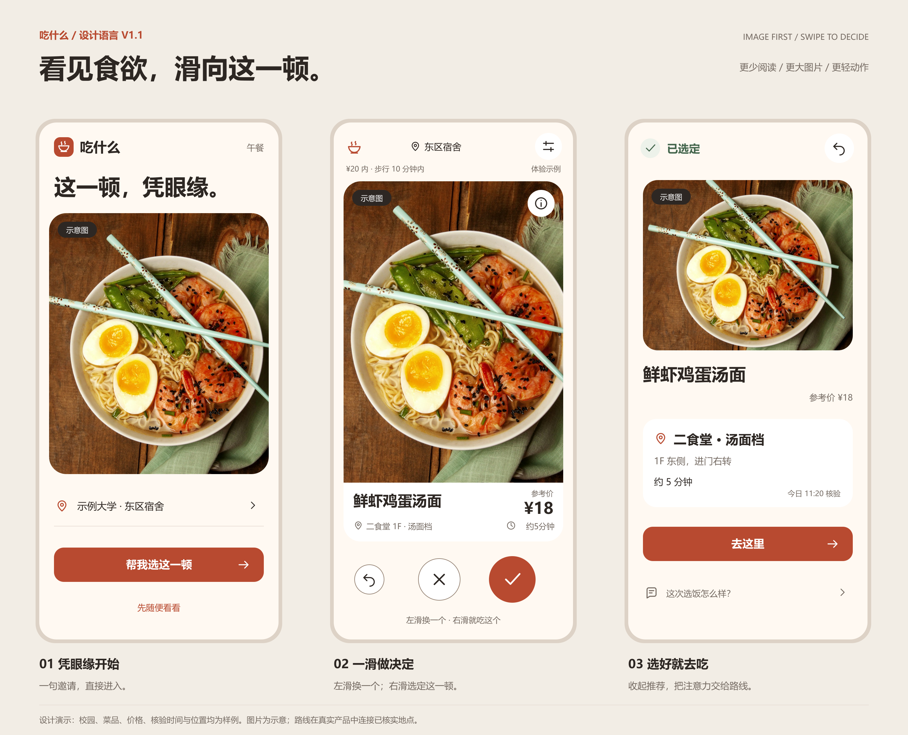
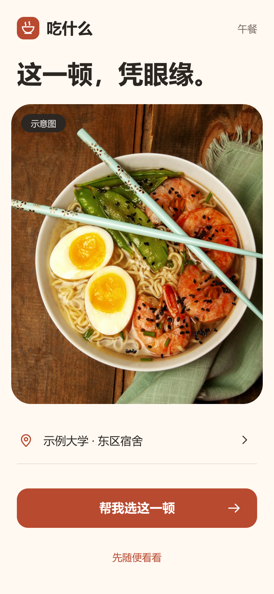
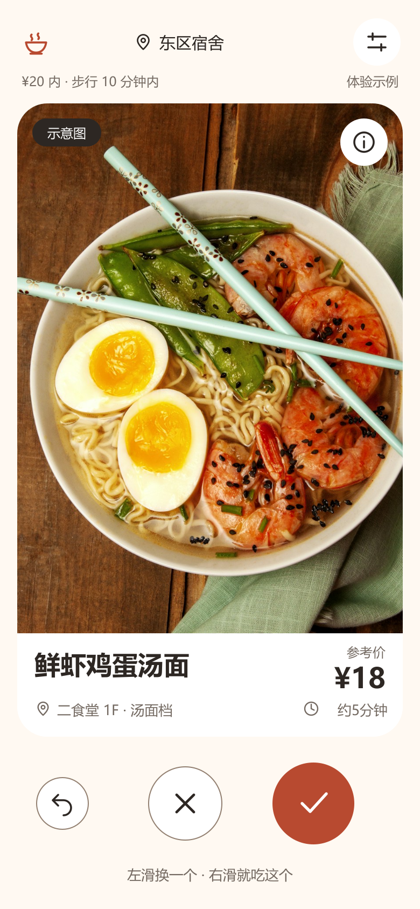
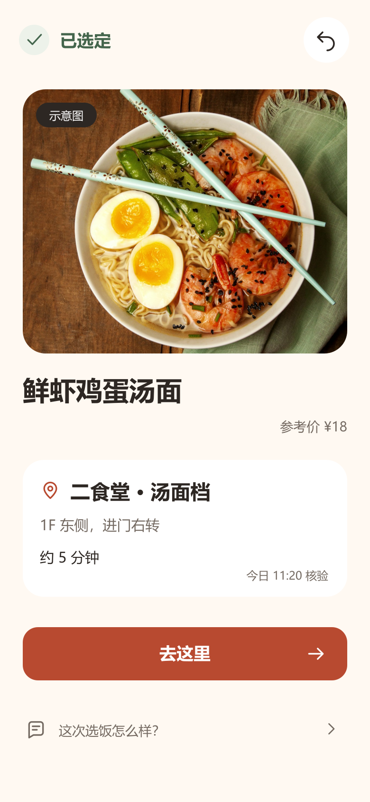
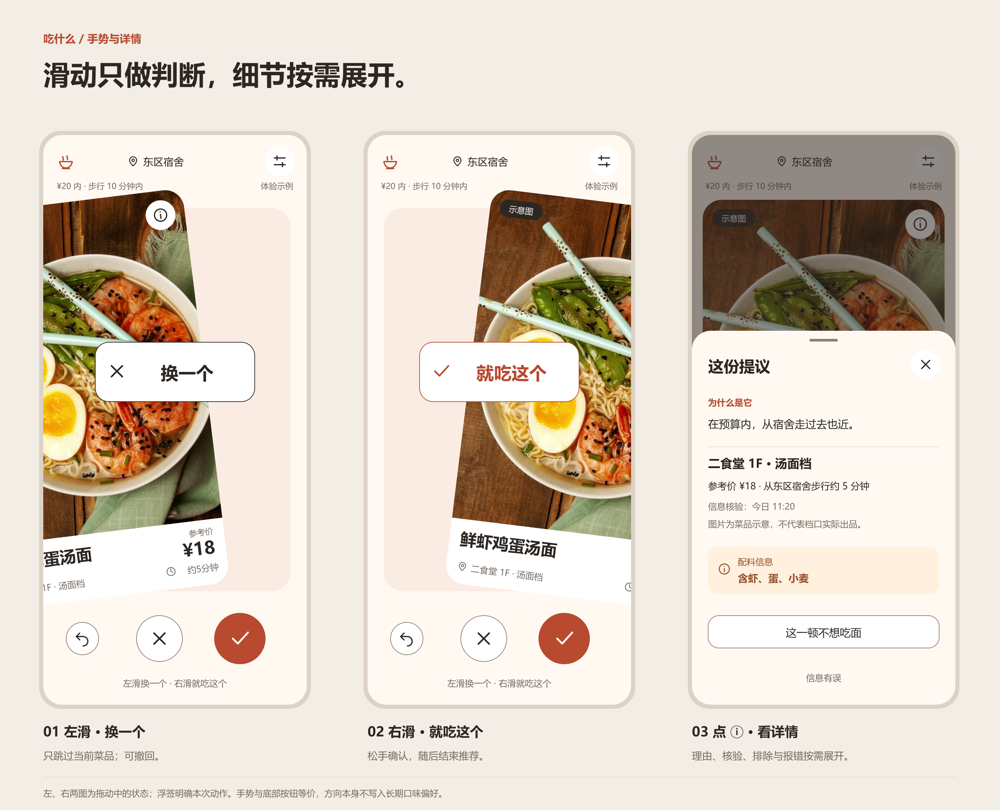
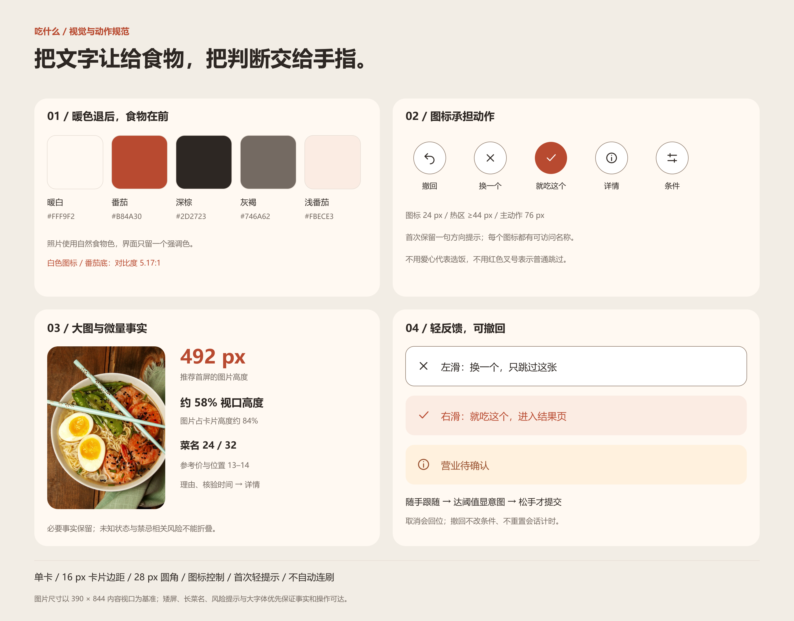

图片空间约翻倍
主图由 350 × 245 增至 358 × 492 px，约占参考视口高度的 58%。菜名、价格和位置仍直接可见。
让大图承载第一眼的吸引力。
左滑换一个，右滑就吃这个。
想多了解时，细节就在 ⓘ 里。
本页展示静态设计参考；手势尚未实现，供后续开发采用。

点击图样查看原尺寸。校园、菜品、价格、配料、时间和位置均为设计演示数据，食物照片为示意。
主图由 350 × 245 增至 358 × 492 px，约占参考视口高度的 58%。菜名、价格和位置仍直接可见。
撤回、跳过、选定采用圆形图标。首次一行提示帮助理解方向；点按与滑动执行相同动作。
左滑只跳过这一张，右滑选定这一顿。选好后转向位置与路线，误操作可以撤回。
温暖底色、竖向大图与少量事实。短屏与大字模式优先保证信息和操作可达。

一句邀请，直接进入。真实选饭与体验入口保留文字。
可编辑 SVG
主卡不再放描述段落。保留图片标识和 ⓘ 详情入口。
可编辑 SVG
停止推荐，路线优先。反馈按需展开，不阻挡下一步。
可编辑 SVG卡片跟手，松手才提交。未达阈值回位，撤回保留条件和计时；理由与核验信息从详情展开。

暖白、番茄色、系统中文黑体与统一线性图标。必要文字帮助用户理解事实和状态。

设计说明包含手势阈值、动效、误操作、响应式和可访问性；PRD 已同步相关流程与记录口径。